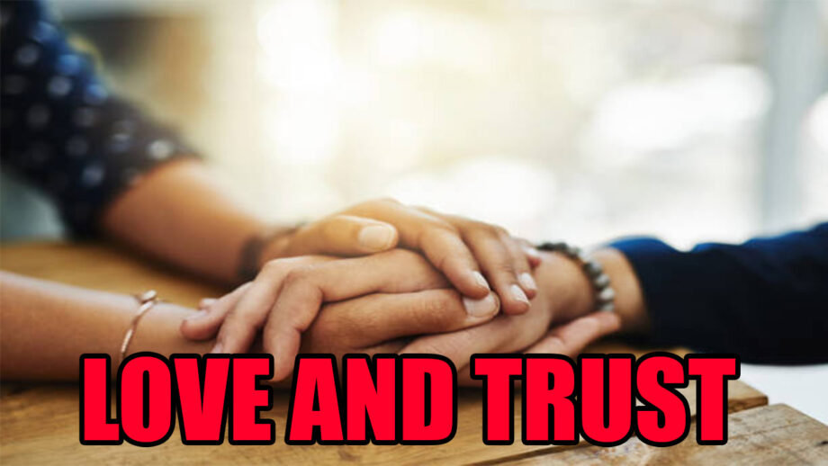

Rewritten and update version of original story, published on 2022-10-22, link: Old version. Here I have added better character development to make the characters more unique and relatable.

5:45 P.M.
Sanjay’s car moved through traffic the way water flows through a narrow channel, forced, unsteady and cutting between lanes with a kind of desperate geometry. His left hand gripped the gear shift longer than necessary after each change, as if releasing it meant to releasing something else too. His leg, the one not on the clutch, bounced with a rhythm that had nothing to do with the music he hadn’t bothered to put on.
He could feel it behind his eyes, the way a storm gathers in the distance, a kind of pressure that made everything seem blurry and distant. In that haze, he reached into his left pocket, fingers fumbling for the familiar shape of his phone, and dialed Raj.
“Raj. Can you come ASAP to our regular hangout place?”
Being his thickest friend since college days, Raj didn’t need to ask questions. He understood things in a particular way and not through analysis, but through instinct. The kind of friend who reads the temperature of your voice and adjusts accordingly.
“Sure, Sanjay. I will reach in a couple of minutes. Will be waiting for you.”
A warmth of understanding in Raj’s voice, a kind of silent support that made Sanjay feel less alone in that moment.
The car brushed the median strip with a dull scrape. A new dent. Sanjay didn’t stop, didn’t even glance at the door. He arrived at the hangout place ten minutes later and sat down on the lawn seat, staring at nothing in particular.
“Raj, can you order a cup of fresh ginger tea for me, please.”
Raj went to the stall, which is adjacent to the bakery, nd in ten minutes, he came with two cups of tea. He placed one in front of Sanjay and sat down across from him, leaning forward with his elbows on his knees, relaxed but attentive.
“Sanjay, what happened? Is it about Swathi?”
Sanjay looked at the tea. His jaw was set in the way it got when he was deciding how much of himself to give away. He sat straight. Shoulders back. The posture of a man performing composure for an audience of one.
“Yes”, said he and then sipped the hot tea and continued, ” She ditched me. She said she’s seeing another *ss**le”.
and then he paused, as if waiting for the words to settle in the air, before continuing.
“How can she do this to me, Raj? Two years. I gave her enough space. I respected her privacy. Was that my mistake?”
His free hand had closed into a loose fist on his thigh. He didn’t raise his voice. He didn’t lean forward. He sipped the tea again, fast this time as if trying to swallow the pain along with the liquid in one gulp. He set the cup down with a quiet, controlled precision that said more than words ever could.
Raj watched him. Sanjay’s leg had stopped bouncing. His posture was composed again, the mask fully on. Anyone passing by would see two friends having evening tea. They wouldn’t see the fist, still slightly closed. They wouldn’t see the eyes that had gone distant again, the way they did when he was trying to hold back something that wanted to break free.
Meanwhile, Raj’s phone buzzed in his pocket. He pulled it out quietly, glanced at the screen, and typed one line without looking up.
“He is with me will call you later.”
He slipped the phone back and leaned into the conversation the way he always did, with a kind of quiet attentiveness that made you feel like you were the only person in the world at that moment.
“Raj, are you seeing a girl too?”
Raj’s face opened into that easy, disarming grin of his.
“Be aware, Raj.”
“Take me as an example. Never trust these girls blindly. For example, see how cruel Swathi is… First, she kissed me, and now she is ready to kiss another one…”
Raj tilted his head. His voice came out gentle, with just a touch of the casual pivot he always reached for when things got sharp.
“Sanjay, be kind to her. She is your girlfriend”.
“Was” was the word that got caught in Sanjay’s throat. He swallowed it down and replaced it with something else.
“You are right, Raj. It is her choice. Preferences change as time matures. We have to respect that.” He said in a matured tone, as if he had just given a lecture to himself on how to be a better person.
They chatted about office politics for the next half an hour and departed.
Sanjay texted Raj when he reached home safely. Had a good dinner with his parents. Made conversation at the table, the way he always did. Then he went to his room, locked the door, and cried like a baby until sleep took him.
For the next month, he posted motivational quotes on social media and collected likes the way he’d once collected Swathi’s attention. He told to himself it is working, that the validation from strangers was a sign of his growing self-esteem.
One afternoon, he took a half-day from work and went to the theatre alone. A film. No particular reason, just something to take his mind off things. He sat in the middle row, the way he always did, and tried to lose himself in the story on the screen.
Just before the interval, he spotted them. Raj and Swathi. Upper corner seats. Her head tilted toward his shoulder. The private universe of two people who had stopped pretending they were just friends.
Something moved through Sanjay’s chest, a mix of emotions that he couldn’t quite name. It wasn’t just jealousy or anger. It was something more complex, a kind of aching recognition of what he’d lost and what he still wanted. And he pushed it down with a firmness that came from practice. By the time the lights came up for interval, his face was entirely calm.
He encountered them at the snack counter. He smiled first.
“Hey guys. Hope you’re having a lovely time together. Your pair is heavenly.”
Swathi caught the edge beneath the warmth. She always did. “I hope you are fine with our relationship.”
Sanjay’s fist, at his side, closed briefly and released. His smile didn’t move.
“Yeah. Yeah. I’m much stronger now. I have a huge career in front of me. That’s more important than anything else.”
He glanced at his phone as if a message had just arrived. It hadn’t.
“Guys, you carry on. Got an emergency work text. I have to leave.”
He left with his back straight and his face composed. The frustration stayed inside him, folded neatly, like something stored for later.
That night, after dinner, he went to his room. Locked the door. Cried like a baby. Slept off.
After a long time alone with his thoughts, he did what he always did when emotion became too much. He strucured it. He wrote down three questions in his notes app, the kind of questions that he felt needed immediate answers to reduce his worries and improve his self-esteem.
1) Why is this always happening to me?
2) Whom should I trust?
3) How much can I trust someone?
He turned to the internet for answers. The internet redirected him to a psychotherapist. Without procrastinating, he booked the top-rated one on Practo and drove there the same day.
The practice was far from home. He drove anyway.
He entered the consultant’s room. He looked at the therapist.
The therapist was Swathi’s mother.
His leg stopped. His face didn’t change. But behind his eyes, the question that had been there since the moment he found out about Swathi and Raj, the question that had been lurking in the back of his mind through all the conversations and all the moments of silence, finally came to the forefront.
“How Much I Can Trust Her?….”
<<< To be Continued >>>